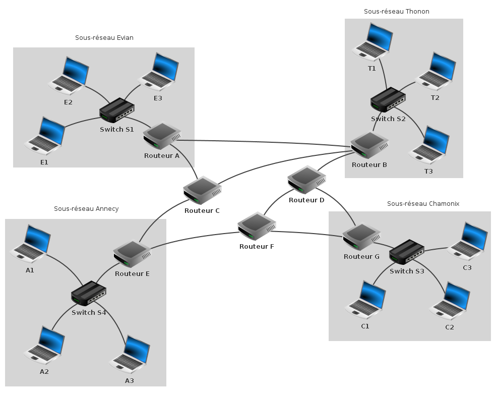

SNT : Internet : Exercice 10.2 SNT internet exercice 10.2
Exercice 10.2 : Eléménts physiques d'un réseau
On considère toujours le réseau "mini-internet" suivant :

Sur votre cours compléter les zones en pointillés (Exercice 10.2 sur la feuille 10)
en donnant les éléments physiques de ce réseau.
Point 10 :
Lever la main pour que le professeur vérifie que tous les exercices ont été faits (liste complètement verte à gauche) et que la feuille du cours a été complétée correctement.